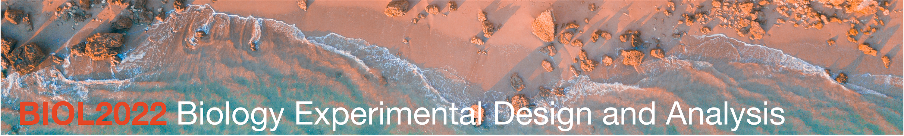

Welcome to the BEDA Handbook

Introduction
Thank you for joining BIOL202 Biology Experimental Design and Analysis, known to many as BEDA (🐝-da). The ability to critically evaluate evidence is a fundamental life skill, and our aim is to help you build a strong foundation in it by helping you develop essential, hands-on skills in experimental design and analysis. We will move beyond theory and focus on the ‘how’ and ‘why’ of research:
- How do you design a robust study from the ground up?
- Why does your study’s design fundamentally shape its results?
- How do you select the right statistical tools for your specific research question?
The skills you learn will be invaluable not just in biology, but in any future career path you choose.
Importante note: We build upon foundational statistical concepts, so a basic understanding is assumed. If you need a refresher, please see: Am I ready for BEDA?
Using this handbook
This online handbook is your primary resource for BEDA. Use the sidebar to navigate through the content. We will walk you through its structure during our first week. To get started, head over to Unit Information to learn about the course structure, assessments, and what to expect.
Below is a quick schedule of the unit, where you can find links to the lectures and practicals.